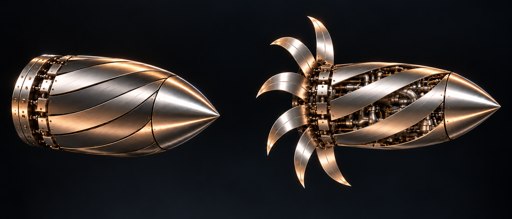
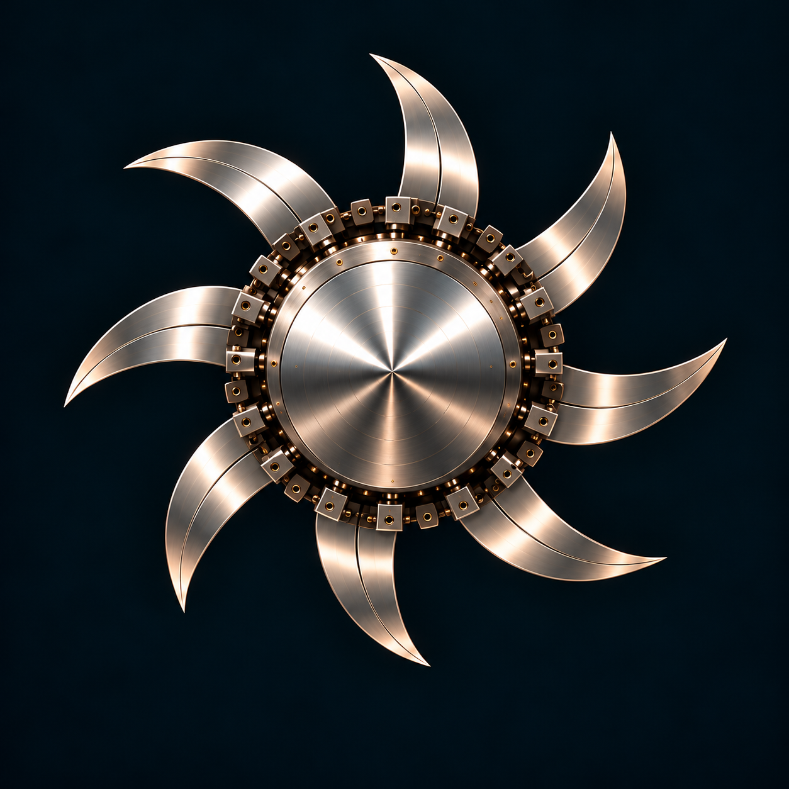
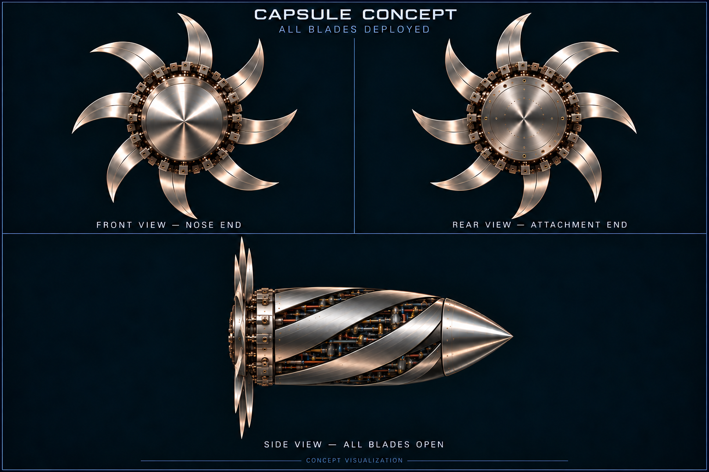
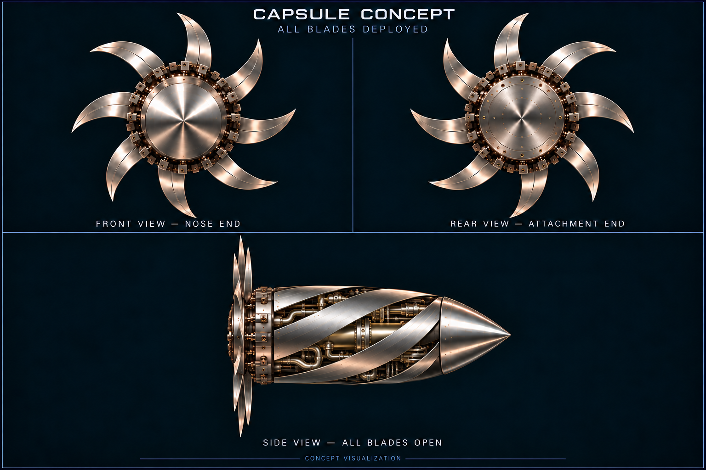

Inhaler
A deployable-blade capsule with an exposed internal compartment in the open configuration.
Inhaler features eight blade panels designed to stow along a capsule and rotate outward, opening shell apertures that reveal the engine compartment between fixed body strips. The design provides a foundation for physical implementation through integrated hinges, actuators, position sensors, and an embedded controller, with prototyping and testing to verify reliable operation.
- Role
- Independent concept designer
- Stage
- Final Design
- Focus
- Radial deployment & packaging
- Next milestone
- Implementation

One compact body.
Eight repeated
moving elements.
The compact configuration alternates deployable blade panels with fixed body strips. Opening the blades uncovers their original shell apertures: these gaps remain open and reveal the internal engine compartment, rather than closing behind the moving panels.
My contribution at this stage is the mechanism design: refining the repeated blade shape, the spacing between elements, and the visual relationship between the closed capsule and the open arrangement.
Alternating fixed and moving surfaces
Fixed body strips remain between neighboring blade panels. The target body opening follows the curved outline, sweep, and tapered tip of its blade panel while stowed, revealing the engine compartment when the blade deploys.
Rear-mounted hinges
Each blade is intended to pivot near the rear ring through a nominal 0°–90° travel.
Consistent repeated geometry
The target array uses eight identical blade shapes at 45° intervals, with equal radial reach and tips on a common circle. At full deployment, the array lies in a plane perpendicular to the capsule axis.
Compact stowage envelope
Folded panels follow the intended body profile; a dimensional CAD model must check panel thickness, hinge intrusion, tip clearance, and tolerance accumulation.
One blade profile.
Eight radial positions.
The front view communicates the circular array. The side elevation shows the same array edge-on, perpendicular to the capsule axis. Lower blades keep their intended shape; no surface contact is part of the deployed configuration.

Each intended blade uses the same swept profile, chord, and radial length. The technical drawing repeats one definition eight times.
Blade positions are distributed at 45° intervals around the rear ring, with their tips on one circular envelope.
The fully opened array lies perpendicular to the longitudinal body axis. A side view changes the projection, not the lower blade shapes.
The target aperture follows its corresponding blade’s stowed outline. The fixed strips remain between the openings, revealing the internal compartment when the panels deploy.


Explore the
deployment sequence.
Use the slider to explore the stowed, intermediate, and fully deployed positions. The schematic highlights uniform blade spacing and equal radial reach, while the side blueprint illustrates the shell openings that expose the internal compartment.
Blade opening angle
Stowed configuration
Panels cover the body apertures while stowed; opening them must expose the compartment between the fixed strips.
The configuration,
clearly defined.
The configuration drawing shows the true side projection of the deployed radial array, the remaining fixed strips, and open apertures revealing an illustrative engine-compartment envelope. The rear projection uses eight exact copies of one blade at 45° intervals.

A mechanism needs
a control strategy.
The next phase would connect commanded movement to measured position. Component selection should follow mechanical load estimates and power requirements, rather than precede them.
Mechanical engineering focus
- Parametric CAD and interference studyBuild the body, rear ring, and repeated blade assembly in SolidWorks; sweep the hinge motion and check adjacent-panel clearance before producing prototype parts.
- Hinge and actuation sizingEstimate torque from geometry, friction, and representative external loading; compare independent actuators with a shared linkage before committing to hardware.
Electrical engineering focus
- Proposed embedded controlEvaluate an ESP32 development board for an initial C++ state machine with stowed, deploying, open, retracting, and fault states; confirm I/O and driver compatibility during selection.
- Proposed circuit developmentUse KiCad for a future schematic and two-layer prototype PCB after bench validation, with regulated power, actuator-driver interfaces, position-feedback inputs, and current monitoring.
A step-by-step path
to a bench prototype.
The sequence begins with the current configuration work and identifies the engineering evidence needed before the design can progress toward a functioning assembly.
Define the compact and deployed configurations
Establish the alternating fixed-panel/blade arrangement, rear-hinge concept, repeated geometry, and the intended transition between closed and open states.
Refine the visual design
Compare side and end views to communicate blade spacing and the deployed arrangement; use concept renderings to surface geometry questions for the CAD phase.
Create a parametric assembly
Set dimensions, material thicknesses, hinge axes, stops, and tolerances in CAD; use a motion study to identify collisions and inaccessible assembly features.
Prototype one hinge and blade
Build a single-element test fixture to measure travel, friction, play, and required torque before duplicating the mechanism around the full body.
Integrate the control and power system
Connect the selected actuator and position sensor on a development board; establish current limits, end-stop handling, and a safe response to missing feedback.
Validate repeated deployment
Test the assembled mechanism across repeated cycles and record position consistency, cycle time, current draw, temperature, wear, and fault behavior.
Make the next claims
measurable.
A successful rendering does not establish mechanical or electrical performance. These proposed checks would produce the evidence needed to revise the design and report defensible results.
| Engineering question | Proposed method | Evidence to record |
|---|---|---|
| Clearance across travel | Sweep the CAD assembly and inspect a slow-moving physical fixture. | Minimum separation, interference locations, and changes required. |
| Position repeatability | Record blade angle over repeated opening and closing cycles. | Angle spread, end-stop consistency, and measured backlash. |
| Actuator load and power | Measure current, voltage, and motion under defined bench loads. | Peak current, steady current, torque estimate, and power margin. |
| Fault response | Interrupt sensor feedback or obstruct motion under controlled bench conditions. | Detection behavior, output shutdown, recovery sequence, and retained faults. |
| Environment and materials | Define operating conditions before selecting seals and conducting exposure tests. | Material compatibility, enclosure requirements, and post-test inspection. |
Let’s discuss engineering
opportunities.
I’m seeking opportunities to learn from teams developing electrical hardware, embedded systems, and integrated electromechanical products.